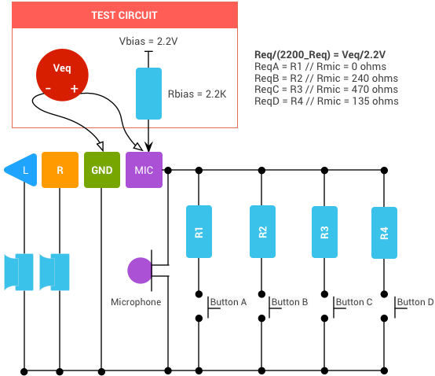
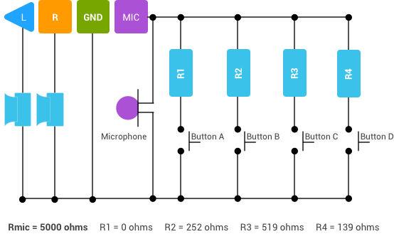

This article specifies requirements for 3.5 mm plug headsets to function uniformly across the Android ecosystem.
Device manufacturers should consult the 3.5 mm jack specification and the Android Compatibility Definition Document (CDD) for additional requirements.
| Function | Accessory Support |
|---|---|
| Stereo Audio Out | Required |
| Audio in (Mic) | Required |
| Ground | Required |
| Control Function | Accessory Support | Description |
|---|---|---|
| Function A | Required | Play/pause/hook (Short Press), Trigger Assist (Long Press), Next (Double Press) |
| Function B | Optional | Vol+ |
| Function C | Optional | Vol- |
| Function D | Optional | Reserved (Nexus devices use this to launch voice commands) |
Assign functions to buttons as follows:
| Function | Accessory Support | Notes |
|---|---|---|
| 4 conductor 3.5 mm plug | Required | Ref: EIAJ-RC5325A standard |
| CTIA pinout order (LRGM) | Required | Except in regions with legal requirements for OMTP pinout |
| OMTP pinout order (LRMG) | Optional | |
| Microphone | Required | Must not be obstructed when operating headset controls |
| Function | Accessory Support | Description |
|---|---|---|
| Ear speaker impedance | 16 ohms or higher | Recommend 32 - 300 ohms |
| Mic DC resistance | 1000 ohms or higher | Mic characteristics must be compliant with section 5.4 Audio Recording of the current Android CDD |
| Control Function Equivalent impedance* | 0 ohm | [Function A] Play/Pause/Hook |
| 240 ohm +/- 1% resistance | [Function B] | |
| 470 ohm +/- 1% resistance | [Function C] | |
| 135 ohm +/- 1% resistance | [Function D] |
*Total impedance from positive mic terminal to GND when button is pressed with 2.2 V mic bias applied through 2.2 kOhm resistor
In the following diagrams, Button A maps to Function A, Button B to Function B, and so on.
The following diagram for Reference Headset Test Circuit 1 shows the CTIA pinout for a 4-segment plug. For the OMTP pinout, switch the positions of the MIC and GND segments.
Figure 1. Reference headset test circuit 1
The following diagram for Reference Headset Test Circuit 2 shows how the actual resistor values (R1 - R4) are altered to meet this specification.
Figure 2. Reference headset test circuit 2
The actual resistance of the buttons parallel with the microphone (R1-R4) is based on the microphone capsule resistance (Rmic) and the equivalent impedance values (ReqA-ReqD). Use the following formula:
ReqN=(Rmic*Rn)/(Rmic+Rn)
Where Rn is the actual resistance of a button, ReqN is the equivalent impedance value of that button (provided), and Rmic is the microphone impedance value.
The example above assumes a 5 kohm microphone impedance (Rmic); to achieve an equivalent R4 impedance of 135 ohm (ReqD), the actual resistor value (R4) must be 139 ohms.